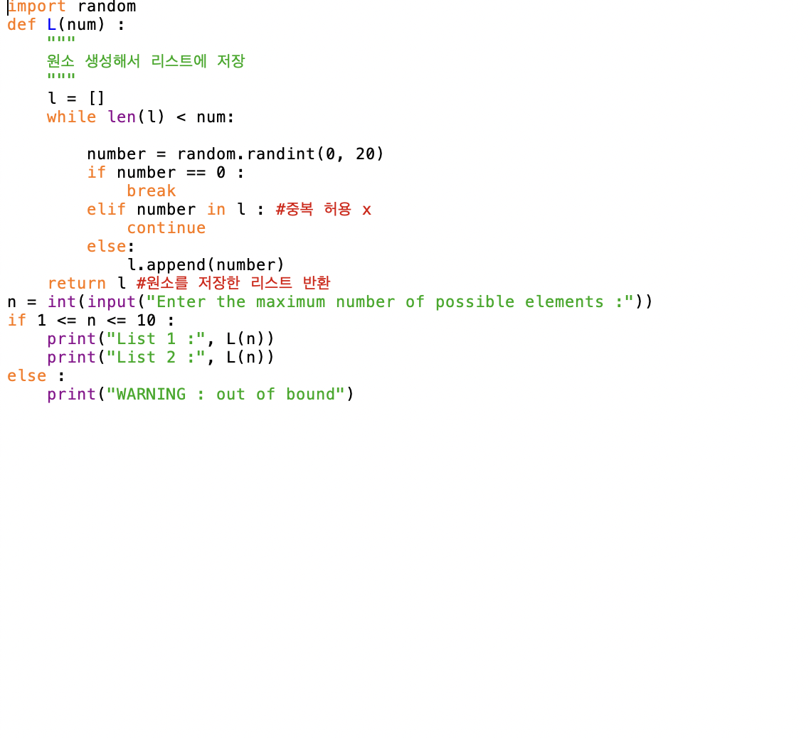
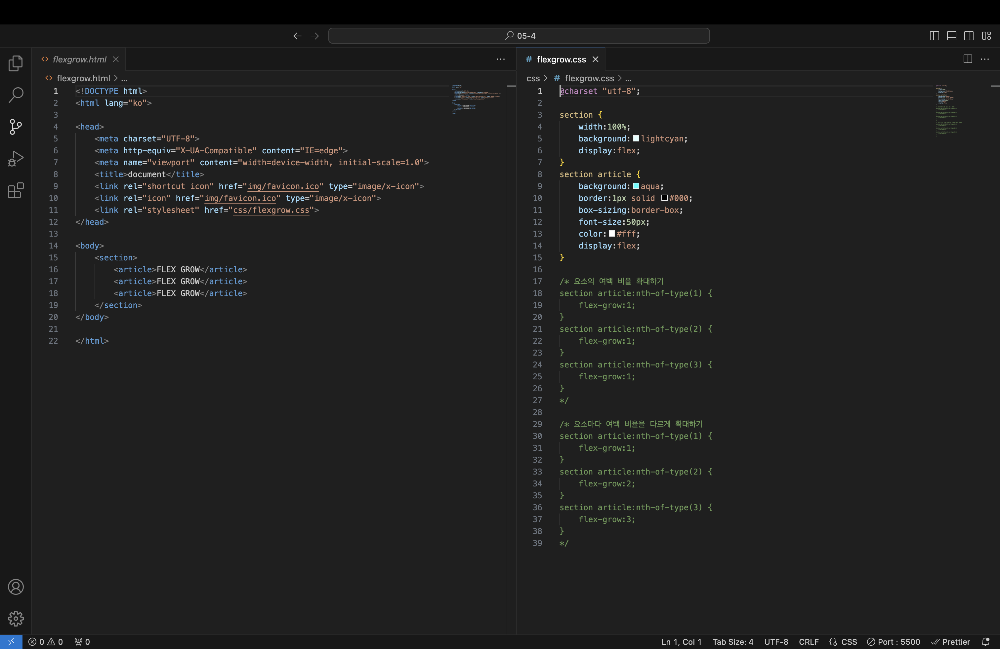
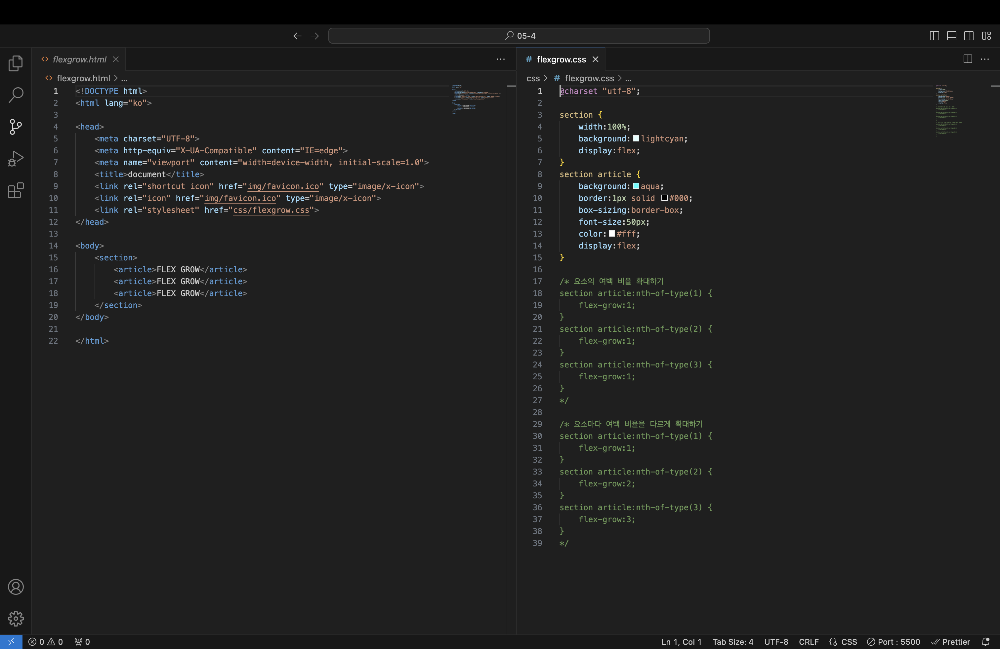

🧠List Comparison and Set Difference
This code compares two lists (L1 and L2) and prints the elements that are only in the longer list. If there is no difference, it prints "No Data".

This code compares two lists (L1 and L2) and prints the elements that are only in the longer list. If there is no difference, it prints "No Data".
Users input two index values and choose an operator to perform arithmetic operations (addition, subtraction, multiplication, division) between the two list elements.
This code stores names and scores (midterm & final) in a dictionary and calculates the average. It also checks for duplicate student names.
A function that generates a list of random numbers without duplicates. If the user inputs a number out of range, a warning is displayed.
This program generates random numbers between 2 and 100, checks if they are prime, and prints the result. Already-checked numbers are skipped.

File names are input by the user and grouped by file extension into a dictionary. It also prevents duplicates and displays the sorted list.
This logic compares two numeric strings by converting them into lists, sorting, removing extremes, and checking if the remaining elements match.
Practiced HTML structure and CSS box model using simple tags, inline styles, and selectors.

 

Created a basic class Stocks with properties like name, price, and count. Includes methods to simulate clicks and track interaction counts.

Demonstrated inheritance by creating a subclass subStocks that inherits from Stocks. Subclass overrides the reset method and adds additional behavior.

In the subclass, method overriding is used to change the behavior of the click() function. The subclass multiplies the count by 2 on each click.